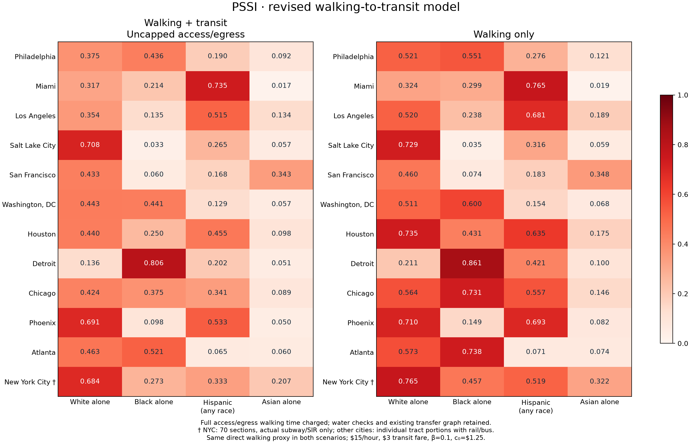

City segregation with walking access to transit
12 cities · four categories · locally recomputed walking + transit and walking-only scenarios · no Routes API calls.
Populations, geographic units and economic parameters are fixed. Eleven cities retain individual populated 2020 city-limit tract portions; NYC retains 70 custom sections. NYC uses only cached subway/SIR service, with no bus/ferry/commuter rail and no old transit proxies. Its new values are not an isolated access-cap experiment relative to the earlier NYC router.
Walking is great-circle distance × 1.3 at 4.8 km/h. Both scenarios share the same direct-walking approximation, including flagged potential water crossings. Parameters: $15/hour value of time, $3 standardized transit fare, β=0.1 per dollar, c₀=$1.25. Saved schedules: Oct 20, 2026 except San Francisco Aug 25, 2026. These are model estimates, not validated itineraries or observed social interactions.
All city PSSI and distance-Fryer scores · Every city-table column defined · All node eigenvectors · Node column definitions · Change from previous access-limited results · Verification
Updated PSSI comparison


Four eigenvector maps for every city
Maps show n×vᵢ, where each race’s right eigenvector sums to 1 and the mean node value is 1. They are relative node scores, not city eigenvalues or scalar normalized PSSI. All cities use the same displayed logarithmic color range; values outside that range are explicitly flagged and preserved in CSV.
- Philadelphia: four eigenvector maps
- Miami: four eigenvector maps
- Los Angeles: four eigenvector maps
- Salt Lake City: four eigenvector maps
- San Francisco: four eigenvector maps
- Washington, DC: four eigenvector maps
- Houston: four eigenvector maps
- Detroit: four eigenvector maps
- Chicago: four eigenvector maps
- Phoenix: four eigenvector maps
- Atlanta: four eigenvector maps
- New York City: four eigenvector maps
All segregation scores

Distance-based Fryer is independently recomputed on 1 km block and tract graphs. It stays unchanged when transit changes. Columns include raw SSI, SSI−K, and (SSI−K)/(1−K); K is the city’s category resident fraction. This is the requested population-share adjustment, not the paper’s simulated null baseline. Fresh Fryer calculations · Fryer column definitions · Geographic method details and sensitivity
| city_id | city | node_scale | node_count | city_population | group | population | population_share_K | segregation_index_with_transit | segregation_index_minus_K_with_transit | segregation_index_normalized_with_transit | segregation_index_walking_only | segregation_index_minus_K_walking_only | segregation_index_normalized_walking_only | segregation_index_walking_minus_transit | segregation_index_minus_K_walking_minus_transit | segregation_index_normalized_walking_minus_transit | distance_block_fryer_node_count | distance_block_fryer_ssi | distance_block_fryer_ssi_minus_K | distance_block_fryer_ssi_normalized | distance_block_status | distance_tract_fryer_node_count | distance_tract_fryer_ssi | distance_tract_fryer_ssi_minus_K | distance_tract_fryer_ssi_normalized | distance_tract_status |
|---|---|---|---|---|---|---|---|---|---|---|---|---|---|---|---|---|---|---|---|---|---|---|---|---|---|---|
| philadelphia | Philadelphia | populated city-limit tract portions | 403 | 1603797 | white_alone | 582636 | 0.363285 | 0.374961 | 0.011676 | 0.018337 | 0.520691 | 0.157405 | 0.247215 | 0.145730 | 0.145730 | 0.228877 | 14549 | 0.963226 | 0.599940 | 0.942243 | ok | 403 | 0.889807 | 0.526522 | 0.826935 | ok |
| philadelphia | Philadelphia | populated city-limit tract portions | 403 | 1603797 | black_alone | 630462 | 0.393106 | 0.436113 | 0.043007 | 0.070864 | 0.550926 | 0.157820 | 0.260045 | 0.114813 | 0.114813 | 0.189181 | 14549 | 0.958056 | 0.564950 | 0.930887 | ok | 403 | 0.936712 | 0.543606 | 0.895718 | ok |
| philadelphia | Philadelphia | populated city-limit tract portions | 403 | 1603797 | hispanic_latino_any_race | 238277 | 0.148571 | 0.189671 | 0.041101 | 0.048272 | 0.276073 | 0.127502 | 0.149751 | 0.086402 | 0.086402 | 0.101479 | 14549 | 0.800072 | 0.651502 | 0.765186 | ok | 403 | 0.695725 | 0.547155 | 0.642631 | ok |
| philadelphia | Philadelphia | populated city-limit tract portions | 403 | 1603797 | asian_alone | 133553 | 0.083273 | 0.091841 | 0.008568 | 0.009346 | 0.121483 | 0.038210 | 0.041680 | 0.029642 | 0.029642 | 0.032334 | 14549 | 0.196117 | 0.112844 | 0.123094 | ok | 403 | 0.095599 | 0.012326 | 0.013446 | ok |
| miami | Miami | populated city-limit tract portions | 138 | 442241 | white_alone | 133690 | 0.302301 | 0.317200 | 0.014899 | 0.021354 | 0.323560 | 0.021259 | 0.030470 | 0.006360 | 0.006360 | 0.009116 | 3831 | 0.482700 | 0.180399 | 0.258563 | ok | 138 | 0.439336 | 0.137035 | 0.196410 | ok |
| miami | Miami | populated city-limit tract portions | 138 | 442241 | black_alone | 57254 | 0.129463 | 0.214465 | 0.085002 | 0.097643 | 0.298520 | 0.169056 | 0.194198 | 0.084054 | 0.084054 | 0.096555 | 3831 | 0.737754 | 0.608291 | 0.698754 | ok | 138 | 0.742021 | 0.612558 | 0.703655 | ok |
| miami | Miami | populated city-limit tract portions | 138 | 442241 | hispanic_latino_any_race | 310472 | 0.702043 | 0.734638 | 0.032596 | 0.109397 | 0.765435 | 0.063392 | 0.212755 | 0.030796 | 0.030796 | 0.103358 | 3831 | 0.992409 | 0.290367 | 0.974525 | ok | 138 | 0.953444 | 0.251402 | 0.843750 | ok |
| miami | Miami | populated city-limit tract portions | 138 | 442241 | asian_alone | 6145 | 0.013895 | 0.017030 | 0.003135 | 0.003179 | 0.018962 | 0.005067 | 0.005138 | 0.001932 | 0.001932 | 0.001959 | 3831 | 0.000000 | -0.013895 | -0.014091 | ok | 138 | N/A | N/A | N/A | undefined_no_eligible_assigned_nodes |
| los_angeles | Los Angeles | populated city-limit tract portions | 1114 | 3898747 | white_alone | 1359068 | 0.348591 | 0.354308 | 0.005717 | 0.008777 | 0.520137 | 0.171546 | 0.263346 | 0.165829 | 0.165829 | 0.254569 | 23843 | 0.964613 | 0.616022 | 0.945677 | ok | 1114 | 0.877928 | 0.529337 | 0.812603 | ok |
| los_angeles | Los Angeles | populated city-limit tract portions | 1114 | 3898747 | black_alone | 336096 | 0.086206 | 0.135110 | 0.048904 | 0.053517 | 0.237713 | 0.151507 | 0.165799 | 0.102603 | 0.102603 | 0.112282 | 23843 | 0.802888 | 0.716682 | 0.784293 | ok | 1114 | 0.689803 | 0.603597 | 0.660540 | ok |
| los_angeles | Los Angeles | populated city-limit tract portions | 1114 | 3898747 | hispanic_latino_any_race | 1829991 | 0.469379 | 0.515299 | 0.045920 | 0.086540 | 0.681290 | 0.211911 | 0.399363 | 0.165991 | 0.165991 | 0.312823 | 23843 | 0.960989 | 0.491610 | 0.926480 | ok | 1114 | 0.961517 | 0.492137 | 0.927475 | ok |
| los_angeles | Los Angeles | populated city-limit tract portions | 1114 | 3898747 | asian_alone | 462643 | 0.118665 | 0.134155 | 0.015491 | 0.017576 | 0.189021 | 0.070356 | 0.079829 | 0.054865 | 0.054865 | 0.062253 | 23843 | 0.340682 | 0.222017 | 0.251910 | ok | 1114 | 0.475530 | 0.356865 | 0.404914 | ok |
| salt_lake_city | Salt Lake City | populated city-limit tract portions | 59 | 199723 | white_alone | 136622 | 0.684057 | 0.707507 | 0.023449 | 0.074221 | 0.729228 | 0.045170 | 0.142970 | 0.021721 | 0.021721 | 0.068750 | 2092 | 0.983527 | 0.299470 | 0.947861 | ok | 59 | 0.975000 | 0.290943 | 0.920872 | ok |
| salt_lake_city | Salt Lake City | populated city-limit tract portions | 59 | 199723 | black_alone | 5766 | 0.028870 | 0.032772 | 0.003902 | 0.004018 | 0.035496 | 0.006626 | 0.006823 | 0.002724 | 0.002724 | 0.002805 | 2092 | 0.000000 | -0.028870 | -0.029728 | ok | 59 | N/A | N/A | N/A | undefined_no_eligible_assigned_nodes |
| salt_lake_city | Salt Lake City | populated city-limit tract portions | 59 | 199723 | hispanic_latino_any_race | 41504 | 0.207808 | 0.264587 | 0.056779 | 0.071673 | 0.316129 | 0.108321 | 0.136736 | 0.051542 | 0.051542 | 0.065062 | 2092 | 0.766852 | 0.559044 | 0.705692 | ok | 59 | 0.800000 | 0.592192 | 0.747536 | ok |
| salt_lake_city | Salt Lake City | populated city-limit tract portions | 59 | 199723 | asian_alone | 10989 | 0.055021 | 0.057206 | 0.002185 | 0.002312 | 0.058629 | 0.003608 | 0.003818 | 0.001423 | 0.001423 | 0.001506 | 2092 | 0.002843 | -0.052179 | -0.055217 | ok | 59 | N/A | N/A | N/A | undefined_no_eligible_assigned_nodes |
| san_francisco | San Francisco | populated city-limit tract portions | 241 | 873965 | white_alone | 361382 | 0.413497 | 0.433149 | 0.019652 | 0.033506 | 0.459779 | 0.046282 | 0.078912 | 0.026631 | 0.026631 | 0.045406 | 5133 | 0.889630 | 0.476133 | 0.811817 | ok | 241 | 0.904815 | 0.491318 | 0.837708 | ok |
| san_francisco | San Francisco | populated city-limit tract portions | 241 | 873965 | black_alone | 46725 | 0.053463 | 0.059694 | 0.006230 | 0.006582 | 0.073988 | 0.020525 | 0.021684 | 0.014295 | 0.014295 | 0.015102 | 5133 | 0.192994 | 0.139531 | 0.147412 | ok | 241 | 0.192450 | 0.138987 | 0.146837 | ok |
| san_francisco | San Francisco | populated city-limit tract portions | 241 | 873965 | hispanic_latino_any_race | 136761 | 0.156483 | 0.168020 | 0.011536 | 0.013676 | 0.183201 | 0.026718 | 0.031674 | 0.015181 | 0.015181 | 0.017998 | 5133 | 0.372574 | 0.216090 | 0.256178 | ok | 241 | 0.261181 | 0.104697 | 0.124120 | ok |
| san_francisco | San Francisco | populated city-limit tract portions | 241 | 873965 | asian_alone | 296505 | 0.339264 | 0.342801 | 0.003537 | 0.005353 | 0.348339 | 0.009075 | 0.013735 | 0.005538 | 0.005538 | 0.008382 | 5133 | 0.768563 | 0.429299 | 0.649729 | ok | 241 | 0.800972 | 0.461707 | 0.698778 | ok |
| washington_dc | Washington, DC | populated city-limit tract portions | 206 | 689545 | white_alone | 273194 | 0.396195 | 0.443413 | 0.047218 | 0.078201 | 0.510977 | 0.114783 | 0.190099 | 0.067564 | 0.067564 | 0.111898 | 4500 | 0.971535 | 0.575340 | 0.952857 | ok | 206 | 0.979939 | 0.583744 | 0.966776 | ok |
| washington_dc | Washington, DC | populated city-limit tract portions | 206 | 689545 | black_alone | 285810 | 0.414491 | 0.440650 | 0.026160 | 0.044678 | 0.600264 | 0.185773 | 0.317284 | 0.159613 | 0.159613 | 0.272606 | 4500 | 0.978595 | 0.564105 | 0.963443 | ok | 206 | 0.856785 | 0.442294 | 0.755401 | ok |
| washington_dc | Washington, DC | populated city-limit tract portions | 206 | 689545 | hispanic_latino_any_race | 77652 | 0.112613 | 0.129106 | 0.016492 | 0.018585 | 0.154319 | 0.041706 | 0.046998 | 0.025213 | 0.025213 | 0.028413 | 4500 | 0.164012 | 0.051399 | 0.057922 | ok | 206 | 0.000000 | -0.112613 | -0.126905 | ok |
| washington_dc | Washington, DC | populated city-limit tract portions | 206 | 689545 | asian_alone | 33545 | 0.048648 | 0.056782 | 0.008134 | 0.008550 | 0.067998 | 0.019350 | 0.020340 | 0.011217 | 0.011217 | 0.011790 | 4500 | 0.013596 | -0.035052 | -0.036845 | ok | 206 | N/A | N/A | N/A | undefined_no_eligible_assigned_nodes |
| houston | Houston | populated city-limit tract portions | 943 | 2304580 | white_alone | 739873 | 0.321045 | 0.440386 | 0.119342 | 0.175773 | 0.734819 | 0.413774 | 0.609428 | 0.294432 | 0.294432 | 0.433655 | 19808 | 0.923114 | 0.602070 | 0.886759 | ok | 943 | 0.740471 | 0.419426 | 0.617752 | ok |
| houston | Houston | populated city-limit tract portions | 943 | 2304580 | black_alone | 520389 | 0.225806 | 0.250363 | 0.024557 | 0.031719 | 0.431358 | 0.205552 | 0.265505 | 0.180995 | 0.180995 | 0.233786 | 19808 | 0.821854 | 0.596048 | 0.769895 | ok | 943 | 0.602107 | 0.376301 | 0.486055 | ok |
| houston | Houston | populated city-limit tract portions | 943 | 2304580 | hispanic_latino_any_race | 1013423 | 0.439743 | 0.454705 | 0.014962 | 0.026705 | 0.634631 | 0.194888 | 0.347855 | 0.179927 | 0.179927 | 0.321150 | 19808 | 0.957346 | 0.517603 | 0.923867 | ok | 943 | 0.776555 | 0.336811 | 0.601173 | ok |
| houston | Houston | populated city-limit tract portions | 943 | 2304580 | asian_alone | 167189 | 0.072546 | 0.098151 | 0.025605 | 0.027607 | 0.175248 | 0.102702 | 0.110735 | 0.077097 | 0.077097 | 0.083128 | 19808 | 0.222614 | 0.150068 | 0.161806 | ok | 943 | 0.348057 | 0.275511 | 0.297061 | ok |
| detroit | Detroit | populated city-limit tract portions | 269 | 639111 | white_alone | 68407 | 0.107035 | 0.136348 | 0.029313 | 0.032827 | 0.210666 | 0.103631 | 0.116053 | 0.074318 | 0.074318 | 0.083226 | 11287 | 0.462639 | 0.355604 | 0.398228 | ok | 269 | 0.570513 | 0.463478 | 0.519033 | ok |
| detroit | Detroit | populated city-limit tract portions | 269 | 639111 | black_alone | 496534 | 0.776914 | 0.805914 | 0.029000 | 0.129995 | 0.860512 | 0.083599 | 0.374736 | 0.054599 | 0.054599 | 0.244742 | 11287 | 0.990385 | 0.213471 | 0.956898 | ok | 269 | 0.963069 | 0.186156 | 0.834456 | ok |
| detroit | Detroit | populated city-limit tract portions | 269 | 639111 | hispanic_latino_any_race | 51269 | 0.080219 | 0.202473 | 0.122253 | 0.132916 | 0.420994 | 0.340775 | 0.370495 | 0.218521 | 0.218521 | 0.237580 | 11287 | 0.826957 | 0.746738 | 0.811865 | ok | 269 | 0.895633 | 0.815414 | 0.886531 | ok |
| detroit | Detroit | populated city-limit tract portions | 269 | 639111 | asian_alone | 10193 | 0.015949 | 0.050916 | 0.034967 | 0.035533 | 0.099866 | 0.083918 | 0.085278 | 0.048951 | 0.048951 | 0.049744 | 11287 | 0.321113 | 0.305164 | 0.310110 | ok | 269 | 0.000000 | -0.015949 | -0.016207 | ok |
| chicago | Chicago | populated city-limit tract portions | 794 | 2746388 | white_alone | 986280 | 0.359119 | 0.424252 | 0.065133 | 0.101630 | 0.564361 | 0.205242 | 0.320250 | 0.140109 | 0.140109 | 0.218620 | 33801 | 0.937884 | 0.578765 | 0.903078 | ok | 794 | 0.935725 | 0.576606 | 0.899709 | ok |
| chicago | Chicago | populated city-limit tract portions | 794 | 2746388 | black_alone | 801195 | 0.291727 | 0.374529 | 0.082802 | 0.116907 | 0.730778 | 0.439051 | 0.619889 | 0.356249 | 0.356249 | 0.502982 | 33801 | 0.962797 | 0.671071 | 0.947474 | ok | 794 | 0.951059 | 0.659332 | 0.930900 | ok |
| chicago | Chicago | populated city-limit tract portions | 794 | 2746388 | hispanic_latino_any_race | 819518 | 0.298398 | 0.340728 | 0.042330 | 0.060333 | 0.556803 | 0.258405 | 0.368307 | 0.216075 | 0.216075 | 0.307974 | 33801 | 0.948603 | 0.650204 | 0.926743 | ok | 794 | 0.915116 | 0.616718 | 0.879014 | ok |
| chicago | Chicago | populated city-limit tract portions | 794 | 2746388 | asian_alone | 192586 | 0.070123 | 0.088846 | 0.018723 | 0.020135 | 0.146391 | 0.076267 | 0.082019 | 0.057544 | 0.057544 | 0.061884 | 33801 | 0.439201 | 0.369078 | 0.396911 | ok | 794 | 0.396414 | 0.326291 | 0.350897 | ok |
| phoenix | Phoenix | populated city-limit tract portions | 384 | 1608139 | white_alone | 799174 | 0.496956 | 0.690924 | 0.193968 | 0.385588 | 0.710014 | 0.213058 | 0.423537 | 0.019090 | 0.019090 | 0.037949 | 15806 | 0.966635 | 0.469679 | 0.933673 | ok | 384 | 0.782098 | 0.285142 | 0.566834 | ok |
| phoenix | Phoenix | populated city-limit tract portions | 384 | 1608139 | black_alone | 125260 | 0.077891 | 0.097523 | 0.019632 | 0.021290 | 0.149399 | 0.071507 | 0.077548 | 0.051876 | 0.051876 | 0.056258 | 15806 | 0.089538 | 0.011647 | 0.012631 | ok | 384 | 0.000000 | -0.077891 | -0.084471 | ok |
| phoenix | Phoenix | populated city-limit tract portions | 384 | 1608139 | hispanic_latino_any_race | 661574 | 0.411391 | 0.532609 | 0.121218 | 0.205939 | 0.692846 | 0.281455 | 0.478170 | 0.160238 | 0.160238 | 0.272231 | 15806 | 0.964745 | 0.553354 | 0.940104 | ok | 384 | 0.863516 | 0.452125 | 0.768125 | ok |
| phoenix | Phoenix | populated city-limit tract portions | 384 | 1608139 | asian_alone | 66169 | 0.041146 | 0.049928 | 0.008782 | 0.009159 | 0.081773 | 0.040627 | 0.042371 | 0.031845 | 0.031845 | 0.033212 | 15806 | 0.044461 | 0.003315 | 0.003457 | ok | 384 | N/A | N/A | N/A | undefined_no_eligible_assigned_nodes |
| atlanta | Atlanta | populated city-limit tract portions | 187 | 498715 | white_alone | 198240 | 0.397502 | 0.463105 | 0.065603 | 0.108886 | 0.573248 | 0.175747 | 0.291697 | 0.110143 | 0.110143 | 0.182811 | 4713 | 0.964822 | 0.567321 | 0.941613 | ok | 187 | 0.892765 | 0.495263 | 0.822016 | ok |
| atlanta | Atlanta | populated city-limit tract portions | 187 | 498715 | black_alone | 235513 | 0.472240 | 0.520919 | 0.048680 | 0.092238 | 0.737710 | 0.265470 | 0.503012 | 0.216790 | 0.216790 | 0.410774 | 4713 | 0.978234 | 0.505994 | 0.958758 | ok | 187 | 0.945471 | 0.473232 | 0.896679 | ok |
| atlanta | Atlanta | populated city-limit tract portions | 187 | 498715 | hispanic_latino_any_race | 29988 | 0.060131 | 0.064679 | 0.004549 | 0.004840 | 0.070759 | 0.010629 | 0.011309 | 0.006080 | 0.006080 | 0.006469 | 4713 | 0.086113 | 0.025983 | 0.027645 | ok | 187 | 0.000000 | -0.060131 | -0.063978 | ok |
| atlanta | Atlanta | populated city-limit tract portions | 187 | 498715 | asian_alone | 22367 | 0.044849 | 0.059644 | 0.014795 | 0.015490 | 0.073693 | 0.028844 | 0.030198 | 0.014049 | 0.014049 | 0.014709 | 4713 | 0.049085 | 0.004236 | 0.004435 | ok | 187 | 0.000000 | -0.044849 | -0.046955 | ok |
| new_york_city | New York City | 70 custom sections | 70 | 8804190 | white_alone | 3000945 | 0.340854 | 0.683668 | 0.342814 | 0.520088 | 0.765018 | 0.424164 | 0.643506 | 0.081350 | 0.081350 | 0.123418 | 30696 | 0.922316 | 0.581462 | 0.882145 | ok | 2292 | 0.892440 | 0.551586 | 0.836819 | ok |
| new_york_city | New York City | 70 custom sections | 70 | 8804190 | black_alone | 1943645 | 0.220764 | 0.272892 | 0.052128 | 0.066896 | 0.457374 | 0.236610 | 0.303644 | 0.184482 | 0.184482 | 0.236748 | 30696 | 0.894014 | 0.673251 | 0.863988 | ok | 2292 | 0.873248 | 0.652484 | 0.837338 | ok |
| new_york_city | New York City | 70 custom sections | 70 | 8804190 | hispanic_latino_any_race | 2490350 | 0.282860 | 0.333185 | 0.050325 | 0.070175 | 0.519294 | 0.236435 | 0.329691 | 0.186109 | 0.186109 | 0.259516 | 30696 | 0.879962 | 0.597103 | 0.832616 | ok | 2292 | 0.822539 | 0.539679 | 0.752544 | ok |
| new_york_city | New York City | 70 custom sections | 70 | 8804190 | asian_alone | 1385144 | 0.157328 | 0.206946 | 0.049618 | 0.058881 | 0.322490 | 0.165162 | 0.195998 | 0.115544 | 0.115544 | 0.137117 | 30696 | 0.775939 | 0.618611 | 0.734107 | ok | 2292 | 0.751943 | 0.594616 | 0.705631 | ok |
Access coverage and travel assumptions
| city_id | city | scenario | node_count | population | transit_selected_pairs | nonlocal_pairs | transit_selected_percent | nodes_without_boarding_access | old_nodes_without_boarding_access | barrier_flagged_direct_walking_pairs | population_weighted_flagged_walking_mass_percent | service_dates | bus_routes | rail_routes | max_pssi_eigenpair_residual | transit_access_seconds_selected_median_minutes | transit_access_seconds_selected_max_minutes | transit_egress_seconds_selected_median_minutes | transit_egress_seconds_selected_max_minutes | transit_selected_pairs_beyond_old_access_radius | transit_selected_pairs_beyond_old_egress_radius | transit_selected_pairs_beyond_either_old_radius | nodes_without_boarding_access_reason |
|---|---|---|---|---|---|---|---|---|---|---|---|---|---|---|---|---|---|---|---|---|---|---|---|
| philadelphia | Philadelphia | with_transit | 403 | 1603797 | 145748 | 162006 | 89.965 | 1 | 4.000 | 3856 | 3.490 | [2026-10-20] | 140 | 26 | 0.000 | 7.217 | 46.046 | 6.949 | 46.385 | 8683 | 9228 | 17208 | No boarding stop passes the retained geometric water/land screen; no access distance cutoff remains. |
| philadelphia | Philadelphia | walking_only | 403 | 1603797 | 0 | 162006 | 0.000 | 1 | 4.000 | 108664 | 33.271 | [2026-10-20] | 140 | 26 | 0.000 | NaN | NaN | NaN | NaN | 0 | 0 | 0 | No boarding stop passes the retained geometric water/land screen; no access distance cutoff remains. |
| miami | Miami | with_transit | 138 | 442241 | 13049 | 18906 | 69.020 | 2 | 2.000 | 2312 | 12.447 | [2026-10-20] | 113 | 6 | 0.000 | 7.228 | 43.903 | 6.843 | 44.042 | 701 | 635 | 1258 | No boarding stop passes the retained geometric water/land screen; no access distance cutoff remains. |
| miami | Miami | walking_only | 138 | 442241 | 0 | 18906 | 0.000 | 2 | 2.000 | 10746 | 34.341 | [2026-10-20] | 113 | 6 | 0.000 | NaN | NaN | NaN | NaN | 0 | 0 | 0 | No boarding stop passes the retained geometric water/land screen; no access distance cutoff remains. |
| los_angeles | Los Angeles | with_transit | 1114 | 3898747 | 1183295 | 1239882 | 95.436 | 3 | 76.000 | 16701 | 3.305 | [2026-10-20] | 108 | 13 | 0.000 | 9.813 | 158.492 | 9.667 | 182.855 | 256384 | 260735 | 460488 | No boarding stop passes the retained geometric water/land screen; no access distance cutoff remains. |
| los_angeles | Los Angeles | walking_only | 1114 | 3898747 | 0 | 1239882 | 0.000 | 3 | 76.000 | 938246 | 28.640 | [2026-10-20] | 108 | 13 | 0.000 | NaN | NaN | NaN | NaN | 0 | 0 | 0 | No boarding stop passes the retained geometric water/land screen; no access distance cutoff remains. |
| salt_lake_city | Salt Lake City | with_transit | 59 | 199723 | 2399 | 3422 | 70.105 | 0 | 4.000 | 0 | 0.000 | [2026-10-20] | 80 | 5 | 0.000 | 9.135 | 75.485 | 8.992 | 69.141 | 702 | 613 | 1136 | No boarding stop passes the retained geometric water/land screen; no access distance cutoff remains. |
| salt_lake_city | Salt Lake City | walking_only | 59 | 199723 | 0 | 3422 | 0.000 | 0 | 4.000 | 4 | 0.000 | [2026-10-20] | 80 | 5 | 0.000 | NaN | NaN | NaN | NaN | 0 | 0 | 0 | No boarding stop passes the retained geometric water/land screen; no access distance cutoff remains. |
| san_francisco | San Francisco | with_transit | 241 | 873965 | 44053 | 57840 | 76.164 | 0 | 1.000 | 509 | 1.345 | [2026-08-25] | 49 | 26 | 0.000 | 6.285 | 33.760 | 6.265 | 30.074 | 2229 | 2152 | 4230 | No boarding stop passes the retained geometric water/land screen; no access distance cutoff remains. |
| san_francisco | San Francisco | walking_only | 241 | 873965 | 0 | 57840 | 0.000 | 0 | 1.000 | 9154 | 9.747 | [2026-08-25] | 49 | 26 | 0.000 | NaN | NaN | NaN | NaN | 0 | 0 | 0 | No boarding stop passes the retained geometric water/land screen; no access distance cutoff remains. |
| washington_dc | Washington, DC | with_transit | 206 | 689545 | 34726 | 42230 | 82.231 | 0 | 1.000 | 1483 | 4.710 | [2026-10-20] | 126 | 6 | 0.000 | 7.913 | 35.298 | 7.849 | 35.948 | 1163 | 1327 | 2406 | No boarding stop passes the retained geometric water/land screen; no access distance cutoff remains. |
| washington_dc | Washington, DC | walking_only | 206 | 689545 | 0 | 42230 | 0.000 | 0 | 1.000 | 25214 | 33.625 | [2026-10-20] | 126 | 6 | 0.000 | NaN | NaN | NaN | NaN | 0 | 0 | 0 | No boarding stop passes the retained geometric water/land screen; no access distance cutoff remains. |
| houston | Houston | with_transit | 943 | 2304580 | 800482 | 888306 | 90.113 | 24 | 297.000 | 67372 | 3.945 | [2026-10-20] | 106 | 3 | 0.000 | 12.224 | 475.464 | 11.984 | 465.138 | 353124 | 344126 | 549074 | No boarding stop passes the retained geometric water/land screen; no access distance cutoff remains. |
| houston | Houston | walking_only | 943 | 2304580 | 0 | 888306 | 0.000 | 24 | 297.000 | 761880 | 30.793 | [2026-10-20] | 106 | 3 | 0.000 | NaN | NaN | NaN | NaN | 0 | 0 | 0 | No boarding stop passes the retained geometric water/land screen; no access distance cutoff remains. |
| detroit | Detroit | with_transit | 269 | 639111 | 65136 | 72092 | 90.351 | 0 | 0.000 | 48 | 0.134 | [2026-10-20] | 82 | 2 | 0.000 | 9.185 | 48.357 | 9.012 | 47.919 | 16608 | 15984 | 28696 | No boarding stop passes the retained geometric water/land screen; no access distance cutoff remains. |
| detroit | Detroit | walking_only | 269 | 639111 | 0 | 72092 | 0.000 | 0 | 0.000 | 3272 | 1.691 | [2026-10-20] | 82 | 2 | 0.000 | NaN | NaN | NaN | NaN | 0 | 0 | 0 | No boarding stop passes the retained geometric water/land screen; no access distance cutoff remains. |
| chicago | Chicago | with_transit | 794 | 2746388 | 601076 | 629642 | 95.463 | 0 | 0.000 | 2879 | 1.112 | [2026-10-20] | 123 | 19 | 0.000 | 7.005 | 52.995 | 6.869 | 52.995 | 12950 | 13637 | 26095 | No boarding stop passes the retained geometric water/land screen; no access distance cutoff remains. |
| chicago | Chicago | walking_only | 794 | 2746388 | 0 | 629642 | 0.000 | 0 | 0.000 | 427326 | 22.754 | [2026-10-20] | 123 | 19 | 0.000 | NaN | NaN | NaN | NaN | 0 | 0 | 0 | No boarding stop passes the retained geometric water/land screen; no access distance cutoff remains. |
| phoenix | Phoenix | with_transit | 384 | 1608139 | 137597 | 147072 | 93.558 | 0 | 62.000 | 1610 | 3.133 | [2026-10-20] | 100 | 4 | 0.000 | 12.778 | 310.046 | 12.817 | 309.314 | 60792 | 58368 | 93119 | No boarding stop passes the retained geometric water/land screen; no access distance cutoff remains. |
| phoenix | Phoenix | walking_only | 384 | 1608139 | 0 | 147072 | 0.000 | 0 | 62.000 | 101766 | 18.668 | [2026-10-20] | 100 | 4 | 0.000 | NaN | NaN | NaN | NaN | 0 | 0 | 0 | No boarding stop passes the retained geometric water/land screen; no access distance cutoff remains. |
| atlanta | Atlanta | with_transit | 187 | 498715 | 29347 | 34782 | 84.374 | 1 | 11.000 | 1377 | 5.124 | [2026-10-20] | 81 | 5 | 0.000 | 10.605 | 67.434 | 10.581 | 68.112 | 4675 | 4696 | 8566 | No boarding stop passes the retained geometric water/land screen; no access distance cutoff remains. |
| atlanta | Atlanta | walking_only | 187 | 498715 | 0 | 34782 | 0.000 | 1 | 11.000 | 14674 | 18.771 | [2026-10-20] | 81 | 5 | 0.000 | NaN | NaN | NaN | NaN | 0 | 0 | 0 | No boarding stop passes the retained geometric water/land screen; no access distance cutoff remains. |
| new_york_city | New York City | with_transit | 70 | 8804190 | 4033 | 4830 | 83.499 | 0 | NaN | 558 | 1.596 | [2026-10-20] | 0 | 29 | 0.000 | 8.458 | 93.888 | 8.458 | 95.305 | 375 | 372 | 729 | No boarding stop passes the retained geometric water/land screen; no access distance cutoff remains. |
| new_york_city | New York City | walking_only | 70 | 8804190 | 0 | 4830 | 0.000 | 0 | NaN | 3068 | 16.132 | [2026-10-20] | 0 | 29 | 0.000 | NaN | NaN | NaN | NaN | 0 | 0 | 0 | No boarding stop passes the retained geometric water/land screen; no access distance cutoff remains. |
Change from the previous access-limited model
| city_id | city | group | segregation_index_with_transit | segregation_index_minus_K_with_transit | segregation_index_normalized_with_transit | segregation_index_previous_capped | segregation_index_minus_K_previous_capped | segregation_index_normalized_previous_capped | segregation_index_change_new_minus_old | segregation_index_minus_K_change_new_minus_old | segregation_index_normalized_change_new_minus_old | comparison_scope |
|---|---|---|---|---|---|---|---|---|---|---|---|---|
| philadelphia | Philadelphia | white_alone | 0.374961 | 0.011676 | 0.018337 | 0.374954 | 0.011669 | 0.018326 | 0.000007 | 0.000007 | 0.000011 | Same Census inputs, schedules, economics and water checks; access/egress distance caps removed |
| philadelphia | Philadelphia | black_alone | 0.436113 | 0.043007 | 0.070864 | 0.436650 | 0.043544 | 0.071748 | -0.000537 | -0.000537 | -0.000885 | Same Census inputs, schedules, economics and water checks; access/egress distance caps removed |
| philadelphia | Philadelphia | hispanic_latino_any_race | 0.189671 | 0.041101 | 0.048272 | 0.189950 | 0.041380 | 0.048600 | -0.000279 | -0.000279 | -0.000328 | Same Census inputs, schedules, economics and water checks; access/egress distance caps removed |
| philadelphia | Philadelphia | asian_alone | 0.091841 | 0.008568 | 0.009346 | 0.091881 | 0.008608 | 0.009390 | -0.000040 | -0.000040 | -0.000044 | Same Census inputs, schedules, economics and water checks; access/egress distance caps removed |
| miami | Miami | white_alone | 0.317200 | 0.014899 | 0.021354 | 0.317360 | 0.015059 | 0.021584 | -0.000160 | -0.000160 | -0.000230 | Same Census inputs, schedules, economics and water checks; access/egress distance caps removed |
| miami | Miami | black_alone | 0.214465 | 0.085002 | 0.097643 | 0.214858 | 0.085395 | 0.098094 | -0.000393 | -0.000393 | -0.000451 | Same Census inputs, schedules, economics and water checks; access/egress distance caps removed |
| miami | Miami | hispanic_latino_any_race | 0.734638 | 0.032596 | 0.109397 | 0.734491 | 0.032448 | 0.108902 | 0.000147 | 0.000147 | 0.000495 | Same Census inputs, schedules, economics and water checks; access/egress distance caps removed |
| miami | Miami | asian_alone | 0.017030 | 0.003135 | 0.003179 | 0.017052 | 0.003157 | 0.003201 | -0.000022 | -0.000022 | -0.000022 | Same Census inputs, schedules, economics and water checks; access/egress distance caps removed |
| los_angeles | Los Angeles | white_alone | 0.354308 | 0.005717 | 0.008777 | 0.355355 | 0.006764 | 0.010383 | -0.001047 | -0.001047 | -0.001607 | Same Census inputs, schedules, economics and water checks; access/egress distance caps removed |
| los_angeles | Los Angeles | black_alone | 0.135110 | 0.048904 | 0.053517 | 0.138173 | 0.051967 | 0.056870 | -0.003064 | -0.003064 | -0.003353 | Same Census inputs, schedules, economics and water checks; access/egress distance caps removed |
| los_angeles | Los Angeles | hispanic_latino_any_race | 0.515299 | 0.045920 | 0.086540 | 0.521949 | 0.052570 | 0.099072 | -0.006650 | -0.006650 | -0.012532 | Same Census inputs, schedules, economics and water checks; access/egress distance caps removed |
| los_angeles | Los Angeles | asian_alone | 0.134155 | 0.015491 | 0.017576 | 0.139503 | 0.020839 | 0.023645 | -0.005348 | -0.005348 | -0.006068 | Same Census inputs, schedules, economics and water checks; access/egress distance caps removed |
| salt_lake_city | Salt Lake City | white_alone | 0.707507 | 0.023449 | 0.074221 | 0.708899 | 0.024841 | 0.078626 | -0.001392 | -0.001392 | -0.004406 | Same Census inputs, schedules, economics and water checks; access/egress distance caps removed |
| salt_lake_city | Salt Lake City | black_alone | 0.032772 | 0.003902 | 0.004018 | 0.033253 | 0.004383 | 0.004513 | -0.000481 | -0.000481 | -0.000495 | Same Census inputs, schedules, economics and water checks; access/egress distance caps removed |
| salt_lake_city | Salt Lake City | hispanic_latino_any_race | 0.264587 | 0.056779 | 0.071673 | 0.271218 | 0.063411 | 0.080044 | -0.006631 | -0.006631 | -0.008371 | Same Census inputs, schedules, economics and water checks; access/egress distance caps removed |
| salt_lake_city | Salt Lake City | asian_alone | 0.057206 | 0.002185 | 0.002312 | 0.057489 | 0.002468 | 0.002611 | -0.000283 | -0.000283 | -0.000299 | Same Census inputs, schedules, economics and water checks; access/egress distance caps removed |
| san_francisco | San Francisco | white_alone | 0.433149 | 0.019652 | 0.033506 | 0.433341 | 0.019844 | 0.033834 | -0.000192 | -0.000192 | -0.000327 | Same Census inputs, schedules, economics and water checks; access/egress distance caps removed |
| san_francisco | San Francisco | black_alone | 0.059694 | 0.006230 | 0.006582 | 0.059718 | 0.006255 | 0.006608 | -0.000024 | -0.000024 | -0.000026 | Same Census inputs, schedules, economics and water checks; access/egress distance caps removed |
| san_francisco | San Francisco | hispanic_latino_any_race | 0.168020 | 0.011536 | 0.013676 | 0.168067 | 0.011583 | 0.013732 | -0.000047 | -0.000047 | -0.000056 | Same Census inputs, schedules, economics and water checks; access/egress distance caps removed |
| san_francisco | San Francisco | asian_alone | 0.342801 | 0.003537 | 0.005353 | 0.343009 | 0.003745 | 0.005668 | -0.000208 | -0.000208 | -0.000315 | Same Census inputs, schedules, economics and water checks; access/egress distance caps removed |
| washington_dc | Washington, DC | white_alone | 0.443413 | 0.047218 | 0.078201 | 0.443161 | 0.046967 | 0.077785 | 0.000252 | 0.000252 | 0.000417 | Same Census inputs, schedules, economics and water checks; access/egress distance caps removed |
| washington_dc | Washington, DC | black_alone | 0.440650 | 0.026160 | 0.044678 | 0.441438 | 0.026947 | 0.046023 | -0.000787 | -0.000787 | -0.001345 | Same Census inputs, schedules, economics and water checks; access/egress distance caps removed |
| washington_dc | Washington, DC | hispanic_latino_any_race | 0.129106 | 0.016492 | 0.018585 | 0.129162 | 0.016549 | 0.018649 | -0.000057 | -0.000057 | -0.000064 | Same Census inputs, schedules, economics and water checks; access/egress distance caps removed |
| washington_dc | Washington, DC | asian_alone | 0.056782 | 0.008134 | 0.008550 | 0.056837 | 0.008189 | 0.008608 | -0.000056 | -0.000056 | -0.000059 | Same Census inputs, schedules, economics and water checks; access/egress distance caps removed |
| houston | Houston | white_alone | 0.440386 | 0.119342 | 0.175773 | 0.734819 | 0.413774 | 0.609427 | -0.294432 | -0.294432 | -0.433655 | Same Census inputs, schedules, economics and water checks; access/egress distance caps removed |
| houston | Houston | black_alone | 0.250363 | 0.024557 | 0.031719 | 0.266822 | 0.041016 | 0.052979 | -0.016459 | -0.016459 | -0.021260 | Same Census inputs, schedules, economics and water checks; access/egress distance caps removed |
| houston | Houston | hispanic_latino_any_race | 0.454705 | 0.014962 | 0.026705 | 0.474227 | 0.034484 | 0.061550 | -0.019522 | -0.019522 | -0.034845 | Same Census inputs, schedules, economics and water checks; access/egress distance caps removed |
| houston | Houston | asian_alone | 0.098151 | 0.025605 | 0.027607 | 0.175235 | 0.102688 | 0.110721 | -0.077084 | -0.077084 | -0.083113 | Same Census inputs, schedules, economics and water checks; access/egress distance caps removed |
| detroit | Detroit | white_alone | 0.136348 | 0.029313 | 0.032827 | 0.138358 | 0.031323 | 0.035078 | -0.002010 | -0.002010 | -0.002251 | Same Census inputs, schedules, economics and water checks; access/egress distance caps removed |
| detroit | Detroit | black_alone | 0.805914 | 0.029000 | 0.129995 | 0.807556 | 0.030643 | 0.137358 | -0.001643 | -0.001643 | -0.007364 | Same Census inputs, schedules, economics and water checks; access/egress distance caps removed |
| detroit | Detroit | hispanic_latino_any_race | 0.202473 | 0.122253 | 0.132916 | 0.210150 | 0.129930 | 0.141262 | -0.007677 | -0.007677 | -0.008347 | Same Census inputs, schedules, economics and water checks; access/egress distance caps removed |
| detroit | Detroit | asian_alone | 0.050916 | 0.034967 | 0.035533 | 0.054878 | 0.038930 | 0.039560 | -0.003963 | -0.003963 | -0.004027 | Same Census inputs, schedules, economics and water checks; access/egress distance caps removed |
| chicago | Chicago | white_alone | 0.424252 | 0.065133 | 0.101630 | 0.424290 | 0.065171 | 0.101690 | -0.000039 | -0.000039 | -0.000060 | Same Census inputs, schedules, economics and water checks; access/egress distance caps removed |
| chicago | Chicago | black_alone | 0.374529 | 0.082802 | 0.116907 | 0.374080 | 0.082353 | 0.116273 | 0.000449 | 0.000449 | 0.000635 | Same Census inputs, schedules, economics and water checks; access/egress distance caps removed |
| chicago | Chicago | hispanic_latino_any_race | 0.340728 | 0.042330 | 0.060333 | 0.340793 | 0.042394 | 0.060425 | -0.000065 | -0.000065 | -0.000092 | Same Census inputs, schedules, economics and water checks; access/egress distance caps removed |
| chicago | Chicago | asian_alone | 0.088846 | 0.018723 | 0.020135 | 0.088916 | 0.018793 | 0.020210 | -0.000070 | -0.000070 | -0.000075 | Same Census inputs, schedules, economics and water checks; access/egress distance caps removed |
| phoenix | Phoenix | white_alone | 0.690924 | 0.193968 | 0.385588 | 0.708094 | 0.211138 | 0.419721 | -0.017170 | -0.017170 | -0.034132 | Same Census inputs, schedules, economics and water checks; access/egress distance caps removed |
| phoenix | Phoenix | black_alone | 0.097523 | 0.019632 | 0.021290 | 0.101948 | 0.024056 | 0.026089 | -0.004425 | -0.004425 | -0.004799 | Same Census inputs, schedules, economics and water checks; access/egress distance caps removed |
| phoenix | Phoenix | hispanic_latino_any_race | 0.532609 | 0.121218 | 0.205939 | 0.548776 | 0.137385 | 0.233406 | -0.016167 | -0.016167 | -0.027467 | Same Census inputs, schedules, economics and water checks; access/egress distance caps removed |
| phoenix | Phoenix | asian_alone | 0.049928 | 0.008782 | 0.009159 | 0.079024 | 0.037877 | 0.039503 | -0.029095 | -0.029095 | -0.030344 | Same Census inputs, schedules, economics and water checks; access/egress distance caps removed |
| atlanta | Atlanta | white_alone | 0.463105 | 0.065603 | 0.108886 | 0.473007 | 0.075505 | 0.125320 | -0.009902 | -0.009902 | -0.016435 | Same Census inputs, schedules, economics and water checks; access/egress distance caps removed |
| atlanta | Atlanta | black_alone | 0.520919 | 0.048680 | 0.092238 | 0.531396 | 0.059157 | 0.112090 | -0.010477 | -0.010477 | -0.019852 | Same Census inputs, schedules, economics and water checks; access/egress distance caps removed |
| atlanta | Atlanta | hispanic_latino_any_race | 0.064679 | 0.004549 | 0.004840 | 0.065221 | 0.005091 | 0.005416 | -0.000542 | -0.000542 | -0.000576 | Same Census inputs, schedules, economics and water checks; access/egress distance caps removed |
| atlanta | Atlanta | asian_alone | 0.059644 | 0.014795 | 0.015490 | 0.060625 | 0.015775 | 0.016516 | -0.000981 | -0.000981 | -0.001027 | Same Census inputs, schedules, economics and water checks; access/egress distance caps removed |
| new_york_city | New York City | white_alone | 0.683668 | 0.342814 | 0.520088 | Not comparable | Not comparable | Not comparable | Not comparable | Not comparable | Not comparable | No comparable capped multicity baseline: NYC now uses actual rail only and the shared expected-time model |
| new_york_city | New York City | black_alone | 0.272892 | 0.052128 | 0.066896 | Not comparable | Not comparable | Not comparable | Not comparable | Not comparable | Not comparable | No comparable capped multicity baseline: NYC now uses actual rail only and the shared expected-time model |
| new_york_city | New York City | hispanic_latino_any_race | 0.333185 | 0.050325 | 0.070175 | Not comparable | Not comparable | Not comparable | Not comparable | Not comparable | Not comparable | No comparable capped multicity baseline: NYC now uses actual rail only and the shared expected-time model |
| new_york_city | New York City | asian_alone | 0.206946 | 0.049618 | 0.058881 | Not comparable | Not comparable | Not comparable | Not comparable | Not comparable | Not comparable | No comparable capped multicity baseline: NYC now uses actual rail only and the shared expected-time model |
Removing access restrictions cannot increase any pair’s minimum cost, but the direction of a segregation-score change is not guaranteed because interaction rows are normalized.
City table column definitions
| column | definition |
|---|---|
| city_id | Stable folder and file identifier. |
| city | 2020 Census incorporated place/city; Washington uses the District of Columbia place. |
| node_scale | Populated city-limit tract portions for 11 cities; 70 custom sections for NYC. |
| node_count | Number of populated geographic units in this city PSSI model; dimensions of its P and A matrices. |
| city_population | Total 2020 population in the selected city limits, independently validated against the published place total. |
| group | 2020 Census category. White, Black and Asian alone include Hispanic residents; Hispanic is any race. Categories overlap. |
| population | Number of residents in this category across all populated city tract portions: Nᵣ = Σᵢ Dᵢ pᵢ. Unit: people. |
| population_share_K | Nᵣ / N, where N is the total city population across all tract portions. Fraction from 0 to 1; used in every adjustment. |
| segregation_index_with_transit | Largest eigenvalue of Aᵣ = P diag(pᵣ), with Pᵢⱼ = Fᵢⱼ Dⱼ / Σₖ Fᵢₖ Dₖ. Raw proportion-based spectral score. Walking + transit, uncapped walking access/egress. |
| segregation_index_minus_K_with_transit | Unscaled difference between PSSI and citywide population share. Zero means λ = K; negative values are retained. Walking + transit, uncapped walking access/egress. |
| segregation_index_normalized_with_transit | Requested normalization. Subtract K, then divide the entire difference by 1 − K. Undefined at K = 1; negative values are retained. Walking + transit, uncapped walking access/egress. |
| segregation_index_walking_only | Largest eigenvalue of Aᵣ = P diag(pᵣ), with Pᵢⱼ = Fᵢⱼ Dⱼ / Σₖ Fᵢₖ Dₖ. Raw proportion-based spectral score. Identical walking-only geography. |
| segregation_index_minus_K_walking_only | Unscaled difference between PSSI and citywide population share. Zero means λ = K; negative values are retained. Identical walking-only geography. |
| segregation_index_normalized_walking_only | Requested normalization. Subtract K, then divide the entire difference by 1 − K. Undefined at K = 1; negative values are retained. Identical walking-only geography. |
| segregation_index_walking_minus_transit | Largest eigenvalue of Aᵣ = P diag(pᵣ), with Pᵢⱼ = Fᵢⱼ Dⱼ / Σₖ Fᵢₖ Dₖ. Raw proportion-based spectral score. Walking-only score minus walking+transit score; absolute score change. |
| segregation_index_minus_K_walking_minus_transit | Unscaled difference between PSSI and citywide population share. Zero means λ = K; negative values are retained. Walking-only score minus walking+transit score; absolute score change. |
| segregation_index_normalized_walking_minus_transit | Requested normalization. Subtract K, then divide the entire difference by 1 − K. Undefined at K = 1; negative values are retained. Walking-only score minus walking+transit score; absolute score change. |
| distance_block_fryer_node_count | Block geographic-node model: Number of populated geographic units in the distance-based Fryer model; differs from PSSI for block models and NYC. |
| distance_block_fryer_ssi | Block geographic-node model: Distance-based geographic-neighbor SSI, radius 1 km, dominant category assignment, equal all-neighbor weights, no self-links. Component eigenvalues averaged by eligible assigned-node count; geographic isolates excluded. |
| distance_block_fryer_ssi_minus_K | Block geographic-node model: Distance Fryer SSI minus all-city category population fraction K. Requested adjustment, not simulated null baseline. |
| distance_block_fryer_ssi_normalized | Block geographic-node model: (Distance Fryer SSI - K) / (1 - K). K is all-city category population fraction; negative values retained. |
| distance_block_status | Block geographic-node model: ok or undefined_no_eligible_assigned_nodes. Undefined scores are blank/NaN, not zero. |
| distance_tract_fryer_node_count | Tract geographic-node model: Number of populated geographic units in the distance-based Fryer model; differs from PSSI for block models and NYC. |
| distance_tract_fryer_ssi | Tract geographic-node model: Distance-based geographic-neighbor SSI, radius 1 km, dominant category assignment, equal all-neighbor weights, no self-links. Component eigenvalues averaged by eligible assigned-node count; geographic isolates excluded. |
| distance_tract_fryer_ssi_minus_K | Tract geographic-node model: Distance Fryer SSI minus all-city category population fraction K. Requested adjustment, not simulated null baseline. |
| distance_tract_fryer_ssi_normalized | Tract geographic-node model: (Distance Fryer SSI - K) / (1 - K). K is all-city category population fraction; negative values retained. |
| distance_tract_status | Tract geographic-node model: ok or undefined_no_eligible_assigned_nodes. Undefined scores are blank/NaN, not zero. |
Dataset attribution
SFMTA required derivative-data notice: Reproduced with permission granted by the City and County of San Francisco. The information has been provided by means of a nonexclusive, limited, and revocable license granted by the City and County of San Francisco.
The City and County of San Francisco does not guarantee the accuracy, adequacy, completeness or usefulness of any information. The City and County of San Francisco provides this information "as is," without warranty of any kind, express or implied, including but not limited to warranties of merchantability or fitness for a particular purpose, and assumes no responsibility for anyone's use of the information.
Route and departure data provided by permission of UTA.
Contains information from City of Phoenix / Valley Metro GTFS, made available under the ODC Attribution License.